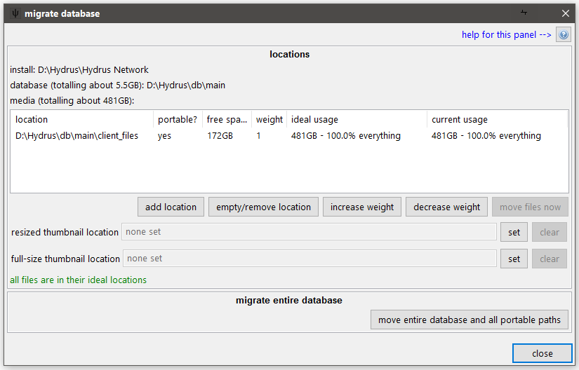

the hydrus database
A hydrus client consists of three components:
-
the software installation
This is the part that comes with the installer or extract release, with the executable and dlls and a handful of resource folders. It doesn't store any of your settings--it just knows how to present a database as a nice application. If you just run the client executable straight, it looks in its 'db' subdirectory for a database, and if one is not found, it creates a new one. If it sees a database running at a lower version than itself, it will update the database before booting it.
It doesn't really matter where you put this. An SSD will load it marginally quicker the first time, but you probably won't notice. If you run it without command-line parameters, it will try to write to its own directory (to create the initial database), so if you mean to run it like that, it should not be in a protected place like Program Files.
-
the actual database
The client stores all its preferences and currently open tabs and knowledge about files--like file size and resolution, tags, ratings, inbox status, and so on and so on--in a handful of SQLite database files, defaulting to install_dir/db. Depending on the size of your client, these might total 1MB in size or be as much as 10GB.
In order to perform a search or to fetch or process tags, the client has to interact with these files in many small bursts, which means it is best if these files are on a drive with low latency. An SSD is ideal, but a regularly-defragged HDD with a reasonable amount of free space also works well.
-
your media files
All of your jpegs and webms and so on (and their thumbnails) are stored in a single complicated directory that is by default at install_dir/db/client_files. All the files are named by their hash and stored in efficient hash-based subdirectories. In general, it is not navigable by humans, but it works very well for the fast access from a giant pool of files the client needs to do to manage your media.
Thumbnails tend to be fetched dozens at a time, so it is, again, ideal if they are stored on an SSD. Your regular media files--which on many clients total hundreds of GB--are usually fetched one at a time for human consumption and do not benefit from the expensive low-latency of an SSD. They are best stored on a cheap HDD, and, if desired, also work well when stored across a network file system.
these components can be put on different drives
Although an initial install will keep these parts together, it is possible to run the database on a fast drive but keep your files in cheap slow storage. And if you have a very large collection, you can even spread your files across multiple drives. It is not very technically difficult, but I do not recommend it for new users.
pulling them apart
As always, I recommend creating a backup before you try any of this, just in case it goes wrong.
If you have multiple drives and would like to spread your database across them, please do not move the folders around yourself--the database has an internal 'knowledge' of where it thinks its thumbnail and file folders are, and if you move them while it is closed, it will throw 'missing path' errors as soon as it boots. The internal hydrus logic of relative and absolute paths is not always obvious, so it is easy to make mistakes, even if you think you know what you are doing. Instead, please do it through the gui:
Go database->migration, giving you this dialog:

***Talk about what portable means.***
These operations are simple, but they can take some time to complete.
If you move your database, the program will have to shut down first. Before you boot up again, you will have to create a new program shortcut:
informing the software that the database has moved
A straight call to the client executable will look for a database in install_dir/db. If one is not found, it will create one. So, if you move your database and then try to run the client again, it will try to create a new empty database in the previous location!
So, pass it a -d or --db_dir command line argument, like so:
- client -d="D:\media\my_hydrus_database"
- --or--
- client --db_dir="G:\misc documents\New Folder (3)\DO NOT ENTER"
And it will instead use the given path. You can use any path that is valid in your system, but I would not advise using network locations and so on, as the database works best with some clever device locking calls these interfaces may not provide.
Rather than typing the path out in a terminal every time you want to launch your external database, create a new shortcut with the argument in. Something like this:

Note that an install with an 'external' database no longer needs access to write to its own path, so you can store it anywhere you like. If you move it, just double-check your shortcuts are still good and you are done.
finally
Now you have a new database in one or more new locations, make sure to update your backup routine to follow these new paths!
p.s. running multiple clients
Since you now know how to tell the software about an external database, you can, if you like, run multiple clients from the same install (and if you previously had multiple install folders, now you can now just use the one). Just make multiple shortcuts to the same client executable but with different database directories. They can run at the same time. You'll save yourself a little memory and update-hassle.